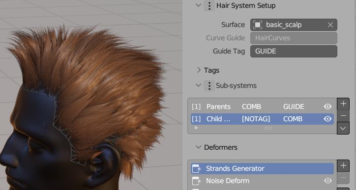
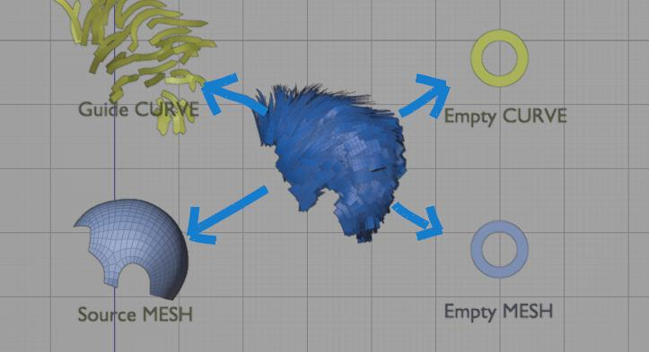
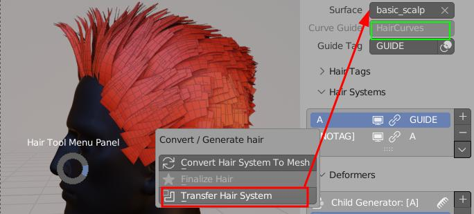
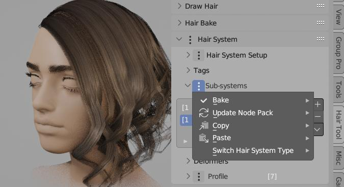
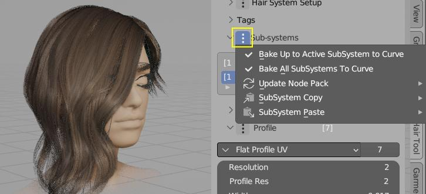
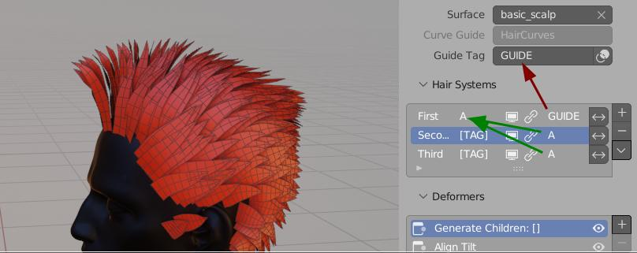
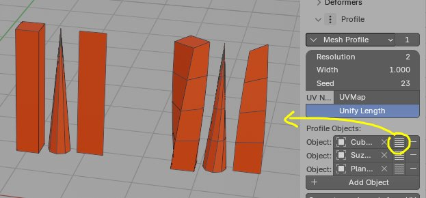
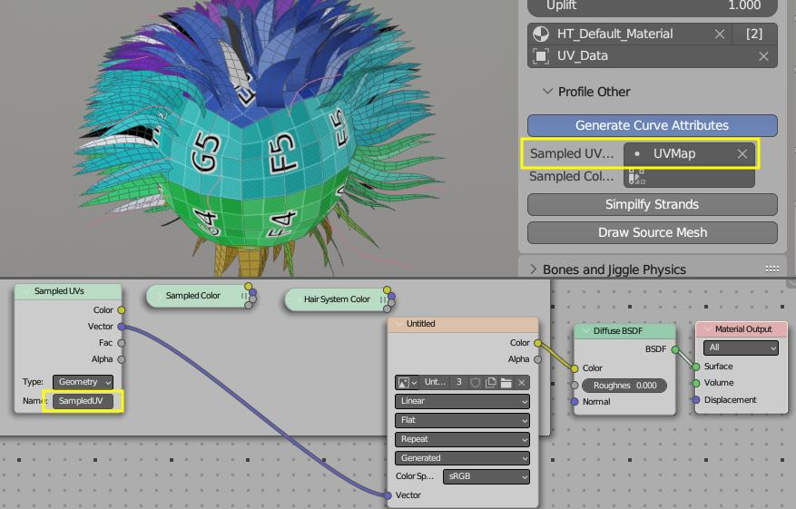
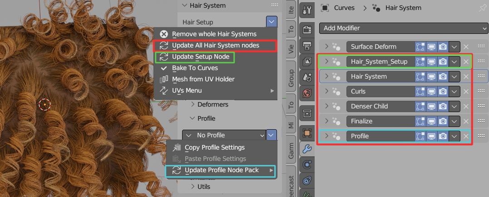
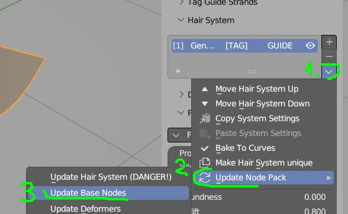

Hair System¶
Note: Available since Blender 3.0, requires Blender 3.3 or above
Overview¶
Hair System will help you generate procedural hair-cards in non-destructive way, based on Blender Geometry Nodes.
Hair System is made from:
- Hair Generator (or Filter),
- followed by list (Deformers), that you can put on top of each other and slowly build up complexity over time.
Hair Systems in stack can be linked together with usage of Tags - this help to describe which Hair System is affecting which strands.
Hair System is located in Right Sidebar → Hair Tool Tab → Hair System Panel. Click [+] to add Hair System to selected mesh or curve object.

On image above we have Two Hair Systems named: Parent, Child. You can see Child system is made from: Strand Generator, Noise, Clump, Set Radius etc. deformers. Whole system is guided by: HairCurve guide - second input at very top
Strands generated with Hair Systems are then passed to hair profile generation system, which convert these strands to hair-cards.
Hair Setup¶
Below I show you demo of how to setup game ready hair in 1 minute:
Full setup - starting from scalp mesh and hair curves, and ending with mesh haircards
Description of steps:
-
Adding Hair System to selected curve hair object (Hair System can be assigned to mesh or curve object - one is required, but you need both to get full functionality)
Note: If you assigned Hair System to curve, then you won't be able to convert it to mesh. In that case use Transfer Hair System option.
-
Reducing Profile width (Flat curve profile is automatically assigned to new Hair System)
- Bumping up strands density to 8888
- Adding Deformers:
- Align Tilt - it will force hair cards to face scalp surface
- Set Radius - it will taper the haircards
- Import hair material: Ctrl+Shift+H → Import Default Hair Material (with default UVs)
- We have to move hair system to mesh (see step 1 note): Ctrl+Shift+H → Transfer Hair System → To Empty mesh
- Ctrl+Shift+H → Convert Hair System to mesh (or you can use Finalize, to create mesh copy of HSystem)
That is it, you can now export generated mesh to Game
Transfer Hair System¶
Hair System can be assigned to Mesh or Curve Hair object, depending on which object is selected when you add Hair System. If you want to change Hair System 'owner' you can use Transfer Hair System operator. 
Hair System that generates hair-cards (in center above) can be assigned to:
Source/Base Mesh mesh from which strands are spawned from
Empty Mesh helper, without geometry, usually linked to Source Mesh and Guide Curve
Guide Curve curve object that guides strands
Empty Curve helper, without geometry, (usually linked to Source Mesh and Guide Curve)
Hair system transfer possibilities:
| Current Owner | Transfer To | Result |
|---|---|---|
| Guide Curve | Base Mesh | Hair System will be moved to Base Mesh Surface (usually scalp) |
| Guide Curve | Empty Mesh | Hair System will be moved to new, empty mesh object |
| Empty Curve | Base Mesh | Hair System will be moved to Base Mesh Surface (usually scalp) |
| Base Mesh | Guide Curve | Hair System will be moved to Guide Curve |
| Base Mesh | Empty Curve | Hair System will be moved to Empty Curve Hair object |
| Base Mesh | Empty Mesh | Hair System will be moved to Empty Mesh object |
| Empty Mesh | Guide Curve | Hair System will be moved to Guide Curve |
| Empty Mesh | Base Mesh | Hair System will be moved to Base Mesh |
Visually there should not be any difference, except Hair System 'owner' will change
User cases when you want to use Transfer Hair System:
- if you want to convert Hair System to mesh, but it is assigned to Curve (Curves do not support converting to mesh). In that case you can transfer Hair System to Empty Mesh, and then convert it to mesh
- if you want to 'Bake' curves generated by Hair System to curve, but it is assigned to Mesh (meshes cannot receive curves geometry). In that case you can transfer Hair System to Empty Curve, and then bake it to it
- if hair interpolation is broken (e.g. stops working after you select and try to sculpt Guide Curve. See note in Hair Iterpolation section
Note: Often you may end up with Hair System assigned to Source Mesh
 Above Hair System was assigned to Guide Curve. Transfer Hair System operator will move Hair System to Base Mesh (or Empty Mesh). Convert to mesh will work now
General Operations¶

- Remove whole Hair System - removes all Hair Systems, Setup and Profile modifiers from object
- Update All Hair System nodes - will replace all Hair Systems (including Profile and Setup modifiers), with the newest version - useful after updating Hair Tool
- Update Setup Node - will update Setup modifier only
- Bake To Curves - will bake Hair System to curves (if possible)
- Mesh from UV Holder - will bake Hair System uv regions/boxes to mesh(es). Can be used as Mesh Profile
- UVs Menu - copy and paste UVs from/to Hair System
Strands Selection¶
Selection Groups¶
With Selection Groups you can manage strands selection - assign selected strands to new (or existing) groups, and then re-select them later. This is useful when making hairstyle with split, as you can select and work on each sided of head independently.
Selection Groups - can be created using 'Assign New ID'. To re-select these strands later use 'Select Group' button and then picking hair strands using (Shift+) LMB
Note: If you want assign hair clump to existing group use Assign Id: [x] - where [x] is Active Group number
Selection Group From Island - it will create and assign hair strands selection groups based on island from which the strand originated
Selection By Island¶
If your source surface (usually scalp), is split into multiple islands, you can select hair strands that are originating from given island. This is useful when you want to select hair strands that are on specific part of the head (like top of the head, or back of the head)
Select Island - will select hair strands that are originating from picked mesh island
Note: instead of splitting the edges physically, you can use the Edges split modifier
Helpers (un)Hide¶
You can also use Hotkeys:
- H key - will hide hair strands
- Alt+H - will reveal hidden strands
Strands Generator and Filter¶
After adding Hair System you will notice first slot in deformers stack is added automatically. It acts in binary way:
Strands Generator¶
Generator - will generate strands from Base Surface at given resolution, density, length etc. with interpolation option (Parent/Guide Tag must be set). These strands are affected by all subsequent deformers in current system stack
Strands Generator - if parent tag is set, then strands will follow guide curves. Set as child
Strands Filter¶
Imagine you want to modify multiple Hair System, for example by adding Set Radius or Align Tilt etc. Rather than adding these deformers to each Hair System, one by one, you can use Filter System, to affect all filtered strands at once. Strands Filter is very useful, if placed at the end of stack - you can modify all preceding Hair Systems in one place.
Note: If no filter tag is specified, then all strands will be affected
In this simple demo we use 'Right' tag, to scale filtered strands
Note: If you want to affect only part of visible hair you can enable 'Affect Tag' option - and type int Tag of hairstrands that you want to modify.
Child - Parent setup¶
Tags can be used to setup child-parent relation between two Hair Systems. This unlocks: clumping, interpolation, curls, braids, twist and some other possibilities.
In video above tag first Hair system with P_TAG, and set it as parent of 'Child' Hair System. Interpolation, clumping and other child deformers can be used now
Hair Interpolation¶
To enable hair interpolation, current Hair System has to have parent - see above.
After that Toggle Interpolation button will be accessible (enabled by default) in first deformer - Strands Generator properties
Note: In some cases interpolation may behave erratically (e.g interpolation breaks when you select Guide Curve). The most likely cause is - cyclic dependency:
- Guide curve depends on your base mesh (usually scalp),
- Base Mesh (with Hair System attached) depends on guide curve (through enabled interpolation to Parent - Guide Curve).
To fix it and break the cyclic dependency use Transfer Hair System and move Hair System to either Empty Mesh or Guide Curve.
Since Hair Tool 2.46 hair strands interpolation works in the area enveloped by loose mesh islands - meaning, if you want to make hairstyle with split:
- split scalp mesh in two, without separating to new object, (e.g. select edge loop, that divides the scalp in half - and press 'V' to rip it). Now child strands will not cross this edge.
In video above I have cut mesh in 4 parts (visualised with 4 colors). Strands won't cross islands boundaries
Note: If you want to make hairstyle with split, you can use Select By Island to select guide strands from specific island
Note: instead of splitting the edges physically, you can use the Edges split modifier
Hair System Copy/Paste¶
 You can copy settings from any hair system, and paste to target using entries above.
Pasting Hair System settings (or instancing object that uses Hair System), will create linked copy. This means that any change on new copy, will affect original Hair System too. Number of Hair System users is displayed next to Hair Tag (green box above).
Note: You can unlink Hair System, by clicking on 'users number' (see green box above)
Tags¶
You can think of Tags as labels assigned to Hair System strands. With Tags you can set child-parent relations or modify filtered strands with deformers. Why don't we just use system name - rather than introducing new feature? The difference is you can assign multiple tags to same strand e.g.:
- System A:
LONGandCURLY. - System B:
LONG
Now you can modify LONG tag without having to repeat same operations on system A and B twice.
In addition, Tags can be assigned to subset of strands from within Hair System: you can use vertex group to select right half of hair strands and tag them as CURLY. Later you can modify only this tag or use it as parent.

In image above we assigned A tag to 'First' Hair System. Guide curves have GUIDE tag - assigned automatically
You can assign Tag in two ways:
- by typing it in next to system name see
Atag in image above. If not tag was assigned then[TAG]label is shown - by using Assign Tag deformer
- you can also assign tags to Hair System guide object (new Curve Hair) using Tags Panel. See Below
Tags Panel¶
In video above we create Tag A, then assign selected curves to tag A using Assign button
Note: Assigning Tags only works on new Hair Curves. To be able to select individual curves, like in video above, you have to use Hair Modeling mode. For now only selection works from all the available Modeling Tools
Hair Deformers¶
Deformers gives you ability change chair look - add noise to hair, make them curl, snap to surface etc. They are stacked one on top of each other in similar way than Blender modifiers. They can be reordered. Some deformers (e.g. clump, twist, braids) will only work, if Hair System, to which deformers belong to is Set as Child
Braids (Child)¶
Clump child strands to Guide/Parent strands (FIRST tag) in shape of Braids. Set Hair System as child first
Clumps (Child)¶
Clumps child strands toward parent strands. Set Hair System as child first
Curls¶
Clump child strands to Guide/Parent strands (FIRST tag) in shape of Curls. Can be used with Hair System as child first
Instance on Strand¶
Instance any mesh on hair Strands (can be used to eg. add tie and tail on the end of braid) - since HTool 2.44
Move in/out of Surface¶
Embed Roots¶
Helps to push hair roots into surface. Best to used before Align Tilt deformer, since it can lead to haircard twisting
Push Out¶
Push hair outside surface. Useful to move hair that clips character geometry outside
Snap¶
Snap hair to source surface (could be used for wet hair effect)
Noise Deformer¶
Add noise distortion to strands
Radius Set¶
Set Radius - for hair tapering, strand width randomization, etc. Can also guide Curls amplitude or Braid size - for child Hair Systems
Scale¶
Scale hair up or down. With trim deformer we can reduce length of hair, but Scale deformer helps to make them longer.
Slide Points¶
Give more resolution to hair root or tips (depending on 'Influence Range'), by 'sliding' points along the curves
Tag¶
Assign Tag¶
Here we assign R tag to right side of head (using vertex group). Then in following 'Scale' Hair System we can reffer to this tag using Strands Filter -> Affect Tag. This way only right side is affected (Scaled)
Note: Assigning any tag e.g. X will create negative tag 'X, for example if we create tag
RIGHTwith some strands, then tag'RIGHTwill contain opposite set of strands.
Delete Strands¶
Simple delete strands operation based on their Tag. In video above I removed strands tagged as R then GUIDE strands (bit hard too see, since they are covered by other strands)
Tilt¶
Add Tilt¶
Add tilt to hair strands. If 'Flip Probability' is 0.5 - then half strands will be rotated clockwise and half counter clockwise
Align Tilt¶
Aligns tilt to hair source surface (hair normal will point outside of surface)
Align Tilt to Parent¶
Aligns tilt to Parent (Guide) strands. Hair card backfaces are shown in blue. Great for Dragon Ball hairstyle :)
Align Tilt to Target¶
Aligns tilt to target surface (hair normal will point outside of target surface)
Track To:¶
Track to Mesh¶
Track to Mesh - Strands from closes mesh island will follow tracked mesh object. Use Bind button to prevets hair tips from 'sliding' on mesh surface
Note: Closest affected island is determined by Tracked object origin. Move it to change which island will be affected. After finding desired island, you can move tracked object in edit mode, so that affected strands won't change.
Note: If you want to 'Freeze' tracked points, use 'Bind Tracked Mesh' button. Now strands will follow point at which they were bound, rather than sliding around mesh surface.
Track to Curve¶
Track to Curve - Strands from closes mesh island will follow tracked curve object. Use Bind button to prevets hair tips from 'sliding' on tracked surface surface
Note: Closest affected island is determined by Tracked object origin. Move it to change which island will be affected. After finding desired island, you can move tracked object in edit mode, so that affected strands won't change.
Note: If you want to 'Freeze' tracked points, use 'Bind Tracked Curve' button (this will convert 'old' curve to 'new' type). Now strands will follow point at which they were bound, rather than sliding around curve surface.
Trim¶
It will shorten strands roots and/or tips. Best to use with randomization mask
Twist¶
Twist effect requires to set Hair System to be set as child. For best effect is is good idea to place it after Clump deformer
UV Region Set¶
It is created automatically when Assigning UV Regions. Add multiple 'UV Region Set' deformers, if you want to achieve layered UVs.
Input Masks¶
You can mask most of the hair deformers inputs with various kind of effects. Multiple masks can be added.
Note: The order matters: first top mask is evaluated then next to the bottom
To add mask click drop down menu icon on right and pick mask type
Vertex Group/Texture¶
Vertex Group/Texture: Use vertex group or texture for input masking*
Offset/Gain¶
Mask Offset Gain: Not useful by itself, but placed after another mask, it can increase the mask contrast (gain) or brightness (offset)*
Invert¶
Invert: Not useful by itself, but placed after another mask, it will invert the previous mask effect
Randomize¶
Randomize: Outputs random value for each strand.
Random value will be picked from within [x-RandRange; x+RandRange] bounds, where x - is any input value - e.g. from vertex group mask
You can disable lower/upper bound using </> buttons, thus limiting Random value range.
- Rand Range - 0 - no randomization; 1 - maximum randomization
- Variance < 0.5 outputs mostly smaller values, from within given range,
- Variance == 0.5 all random values are drawn uniformly, from within given range,
- Variance < 0.5 outputs mostly bigger values, from within given range,
- Use Parent IDs - if enabled each child strand will inherit random value from its closest parent.
Length Mask¶
- Assigns Min value to the shortest strands,
- Assigns Max value to the longest strands.
- Swapping Min and Max values will invert the effect
Procedural Mask¶
Procedural Mask: Use procedural noise texture to randomize hair look. No need for UVs
- Min, Max - bring these values closer together to get sharper noise transition,
- Scale - the bigger scale the more detailed the texture will be,
- Distort - distorts the noise,
- Offset - offset the noise sampling position
Influence Range¶
Special mask that allows to modulate influence of deformer over strand length (e.g. taper only tip of strand). 0 - no effect, 1 - maximum effect
Types of Influence range masks:
- Constant - the effect is uniform along the whole strand length
- Simple - gradually changes the influence from 0 to 100%. Influence can be flipped using invert button
- Quadratic - gives more detailed control: modulate effect independently at strand beginning, center and end
- Profile Curve - most detailed control using profile curve
Defining Uvs¶
Defining UVs¶
Hair Uvs button works same way as for any other hair object. You can click and drag to define multiple UV regions.
- Since HTool 2.44 you can define multiple UVs regions (previously only one UV Region was supported)
- Make sure Hair System has material assigned in 'Profile' properties (or use Import Default Material)
- Material UVs are outputted by 'Offset Node' - without it UVs won't work. After converting Hair System to mesh, you can use 'normal' mesh uvs (Offset node is not required)
- Hair System does not use multiple materials hack like we had to do for 'old' Curves
- 'Hair UV' operator will automatically add UV Region Set Deformer (see below) if it does not yet exist.
Assigning UV Regions¶
You can use multiple 'Set UV Regions' Deformers, and stack them on top of each other (think of them as layers). In video above, I used 2nd Region (green) as base layer, then added 0th Region (purple) on top - masked by vertex group
- You can also use Set UV Region, and it will automatically create new 'UV Region Set' Deformer (or use active one if selected in Deformer Stack)
- If not UVs were assigned to current Hair System object, then running 'Set UV Regions' operator will add default UVs (with single UV box/region)
Hair Profiles¶
Hair Strands generated by Hair System, are then processed by Hair Profile system - it will add geometry to each strand, based on selected profile type. Most of these profiles types support UV mapping, so you can use textures to control hair look.
Presentation of hair profiles available for Hair System
- No Profile - useful for build-in Blender curve Hair rendering (controlled in 'Curves' Panel in Cycles/Eevee Render Settings)
- Round Profile - used in Hair Tool baking setup
- Mesh Profile - replace hair strands with mesh (or collection of meshes) - e.g. you can instance feathers on hair
- Curve Profile - (with UV's) - any curve object can be used as custom hair profile
- Flat Profile - (with UV's) - AKA haircards,
- Circle Profile - (with UV's) - same as above, but it will generate cylinders
- Braid Profile - (with UV's) - generate procedural braids on each haircard
Braid Profile¶
In demo above you can see both curve taper and tilt is affecting the generated braids shape
- Frequency - how dense braid interlacing is
- Main Radius - overall braid size
- Profile Radius - individual strands size (relative to Main Radius)
- Braid Resolution Factor - how many points should be generated for each period on braid (higher == smoother look)
- Radius Slide - The smaller the radius of guide curve, the more dense the braid becomes. Helps to give uniform look, when guide hair tapers
Curls Profile¶
Curls Profile solves the issue of Curls Deformer - it has perfect aligning of haircard to center of guide curve (new in HTool 2.44)
- Frequency - how 'dense' curls are
- Amplitude - overall curls size
- Width - hair-card width
- Gravity - Curls get tenser at the endings
- Influence Range - Blend between straight strand and curl over strand length
- Influence Width - control the strand width over its length
Mesh Profile¶
In this case I used Collection with 3 objects, to instance them along hair strands
Mesh profile objects should point up, and theirs origin be at the bottom. Otherwise, they may not align correctly to hair strands. Their length is not normalized, meaning taller objects will be longer after placing on hair strands (you may need to match profile objects height by hand, to give them same length).
- Width - changes cross-section size of mesh when its is placed on top of curve
 Slice Mesh Profile button will cut object using custom 'slicing' modifier. This way it will conform better to hair splines - only. Button is displayed next to Profile dropdown menu '✓'
Note: Slice Mesh Profile is using boolean operation in background. It may fail on more complicated objects - e.g. when mesh has self intersections.
UV's of mesh profile objects will be preserved when instanced on top of hair. Using multiple copies of same objects with different UVs is a good way to add some randomization to hair look.
Utils¶
This section contains operators that are useful for Hair System workflow.
Generate Attributes¶
Generate extra attributes like:
- Tangent - required for proper specular highlights (only if you use Hair Tool hair material)
- Factor - black and white gradient along each strand length
- Random - each haircard will get random grayscale color
- Sample UV - pick name of UV channel, that you want transfer from Source Surface mesh to strands. This attribute can be then accessed in Hair Material using Attribute Node with name SampledUV
- Sample Color - pick name of vertex Color that you want transfer from Source Surface mesh to strands. This attribute can be then accessed in Hair material using Attribute Node with name SampledColor
 Above we sample 'UVMap' from sphere. This generates attribute named 'SampledUV', which can be used to color strands the same way as character body (sphere)
Simplify Strands¶
Simplify Strands optimizes polycount of generated hair geometry, by assigning less points to shorter strands. This can easily cut polycount in half!
Draw Source Mesh¶
If Hair System is attached to source surface (scalp mesh in demo above), you can toggle drawing of this surface
Updating¶
After updating Hair Tool add-on, you may need to update your Hair Setup:
- There is option to update Individual Hair System elements (Deformers, Masks, Profiles etc.) - located in Deformers dropdown menu
- Setup and Profile node (green and blue box on image below)
- Update Whole Hair System located in General Menu - this will update all nodes, in all Hair Systems for all objects on scene. Be warned though: add-on will try to recreate whole node tree structure from scratch, so this may now always work.
 You may update deformer, profile, mask etc. nodes using menu above
Note:: Using individual node packs update (only Deformers, or only Masks etc.) method is usually safer.
Limitations¶
Only One UV box can be assigned to profile - you can use Mesh Profile with multiple meshes as a workaround for randomizing UVs(No longer the case Since HT 2.44)- Hair Modeling Tools do not work (except selection)
Hair interpolation is using booleans under the hood. Because of this, interpolation may fail if boolean fails. And Interpolation may be slow on heavy base meshes (I recommend using lowpoly hair surface meshes). Hopefully I will find better way in the future, to create interpolations.(No longer the case since Blender 3.5 and Hair Tool 2.44)
FAQ¶
I get Errors in console¶
If you open old blend file with old Hair Tool setup, after you updated Hair Tool, you may get some errors, and UI wont be drawn correctly. Use Update Whole Hair System located in General Menu - this will update all nodes, in all Hair Systems for all objects on scene
Warning this is potentially destructive operation, since whole node tree will be recreated from scratch. Updated nodes behavior may change, resulting in slightly different hair look
Cannot convert Hair System¶
If you can't convert Hair System to mesh, then it is most likely, because Hair System is assigned Hair Curve object. Curves do not support converting to mesh operation. Use Transfer Hair System to move Hair System from Curve to Mesh. Then conversion to mesh Hair Cards will work
Hair Interpolation won't work¶
In some cases interpolation may behave erratically (e.g interpolation breaks when you select Guide Curve). The most likely cause is - cyclic dependency between Base Mesh with attached Hair System and Guide Curve.
See note in Hair Iterpolation section.
To fix the cyclic dependency use Transfer Hair System and move Hair System to either: Empty Mesh or Guide Curve.
Note: If you use Blender below 3.5, then Hair Tool used boolean operation/hack to interpolate hair strands. This may fail on some meshes (eg. nonclosed planar surfaces). In Blender 3.5 and above, Hair Tool uses new method, which is more robust, and will always work on any mesh. I recommend updating Blender to ver. 3.5.1, and then updating the node setup responsible for interpolation using this button: 